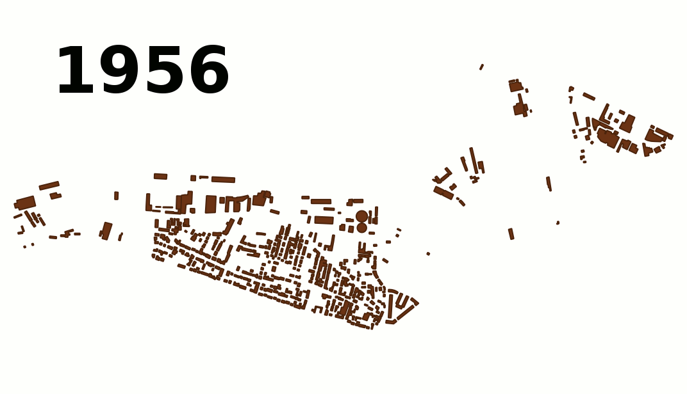
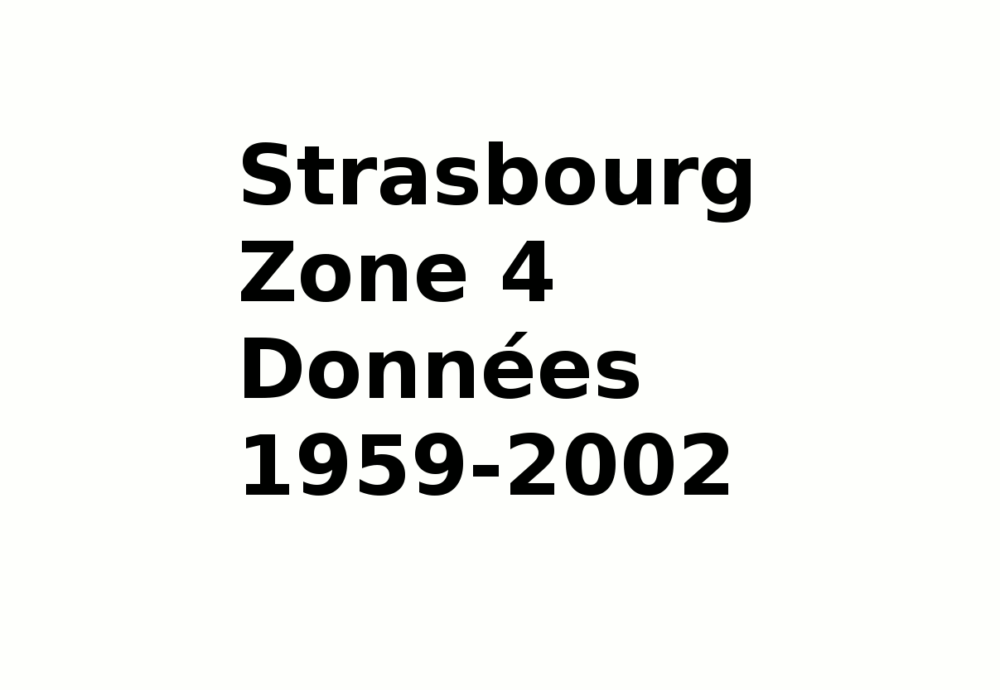

Accueil du site > Zones d’étude

Zones d’étude
Afin d’étudier les dynamiques urbaines, nous travaillons sur différentes zones géographiques, notamment à Strasbourg et Orléans.
Articles de cette rubrique
-
Strasbourg
Nous avons sélectionné 4 zones d’étude pour Strasbourg :
* Zone 1 : Quartier Bischheim - Souffelweyersheim
* Zone 2 : Quartier des Poteries - Koenigshoffen
* Zone 3 : Quartier de l’Orangerie
* Zone 4 : Neudorf- 
- Strasbourg - Zone 4
- Versions successives de la couche bâtiment sur la zone d’étude numéro 4 de Strasbourg
- 
- Strasbourg - Zone 4 - évolution des couches
- Versions successives de toutes les couches de données sur la zone d’étude numéro 4 de Strasbourg.
-
Orléans
Dans le cadre du projet ANR GeOpenSim, 2 zones d’étude ont été sélectionnées :
* Zone 1 : Fleury
* Zone 2 : Ingré